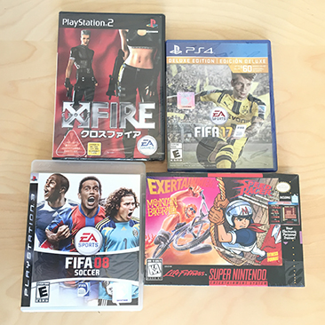
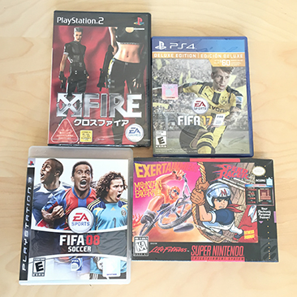

I am Scott Wardle, I have been in games over 20 years. I like to solve hard problems. I am known for Systems Programming, C++ and turning problems into solutions that everyone can use.
Recently I have moved to the Bay Area to work on Google’s Stadia. I am now working with game engine programmers from around the world, and helping them to port to Stadia. Working on Stadia for me means learning Linux, Vulkan, Git and lots of internal Google tech like Golang.
I started in games at Radical Entertainment, writing games for Super Nintendo in 65816 ASM but soon changed to C++ on mostly on Sega Saturn. I worked on Independence Day, ESPN X-Games Pro Boarder, Speed Racer.
After digging though hardware manuals on the Sega Saturn for years, and being jealous of my co-worker working on beautifully high-level PS1 (PlayStation 1) I moved to Japan and started at EA Square. I wanted to be one of the first people to work on PS2 (PlayStation 2) maybe it would be just as easy as PS1. PS2 was fun but not very high level... and so I continued my work on low level hardware. I had a great time in Tokyo and learned conversational Japanese though, I am a bit slow reading and writing (in English or Japanese as I am dyslexic ha!).
I came back to Canada to finish my bachelor degree of technology at BCIT and transferred to EA Vancouver where I have worked between 2000-2019. I worked for library teams in EA like Frostbite. However I am mostly known for my systems work on FIFA.
Some of the roles I have had on FIFA:
- Systems Lead - porting to Nintendo Switch
- Systems Lead - porting to Frostbite
- Systems Lead - porting to PlayStation 4 and Xbox One
- Systems Lead - rewriteing FIFA's Gameplay
- Technical Director - Total Football 1 and 2
In my free time I have been learning web dev skills (javascript, golang...) as they are useful and I can help my wife, who is a web designer/developer. I also like wine, cheese and anime, and do a fair bit of yoga.

 
